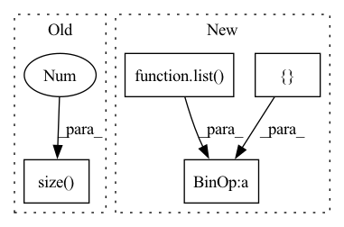

Pattern ID :11050

Before Change
// batch-wise random inverse normal vector (prob: 0.5)
if random_inv:
random_mask = torch.randint(0, 2, (group_xyz.size(0), 1)).float() * 2. - 1.
random_mask = random_mask.to(unit_nor.device)
if not is_group:
unit_nor = unit_nor * random_mask
After Change
if random_inv:
batch_prob = np.random.rand(offset.shape[0]) < 0.5
random_mask = []
sample_offset = [0] + list(offset.cpu().numpy())
for idx in range(len(sample_offset) - 1):
sample_mask = torch.ones((sample_offset[idx+1] - sample_offset[idx], 1), dtype=torch.float32)
if not batch_prob[idx]:
sample_mask *= -1
In pattern: SUPERPATTERN
Frequency: 3
Non-data size: 4
Instances
Fragment ID: 38067676
Project Name: hancyran/repsurf
Commit Name: e320999634bd03b5020e1af0092663c02c862ba8
Time: 2022-09-18
Author: ranhaoxi@gmail.com
File Name: segmentation/modules/recons_utils.py
M Class Name: AnonimousClass
N Class Name: AnonimousClass
M Method Name: cal_normal(4)
N Method Name: cal_normal(3)
M Parent Class:
N Parent Class:
M File Name: segmentation/modules/recons_utils.py
N File Name: segmentation/modules/recons_utils.py
M Start Line: 28
M End Line: 29
N Start Line: 10
N End Line: 37
'>
Before Change
def calc_bandwidth(set1, set2, kernel_num=10):
batch_size = set1.size(0)
seq_len = set2.size(0)
set1_centre = set1.mean(-1).view(-1, 1)
set2_centre = set2.mean(-1).view(1, -1)
distance = (set1_centre - set2_centre).pow(2).pow(0.5).max(-1)[0].max(-1)[0]
After Change
def calc_bandwidth(first_kernel, third_kernel, kernel_num=20, max_scale=2.0, min_scale=0.1):
// * kernel: [batch_size, particle_num, particle_num]
kernel_mean = torch.cat([first_kernel, third_kernel], dim=-1).mean(-1).max(-1)[0]
particle_num = first_kernel.size(-1)
kernel_num
scale_list = list(np.linspace(min_scale, max_scale, num=kernel_num))
bandwidth_list = [(kernel_mean * scale).view(-1, 1, 1).detach() for scale in scale_list]
first_items = 0
third_items = 0
for h in bandwidth_list:
'>
Fragment ID: 38067677
Project Name: deligentfool/dqn_zoo
Commit Name: 1ac00bac8d92870064cdcf754b6e29278f14ae79
Time: 2020-11-04
Author: 1027660817@qq.com
File Name: MMD_DQN/mmd_dqn.py
M Class Name: AnonimousClass
N Class Name: AnonimousClass
M Method Name: calc_bandwidth(5)
N Method Name: calc_bandwidth(3)
M Parent Class:
N Parent Class:
M File Name: MMD_DQN/mmd_dqn.py
N File Name: MMD_DQN/mmd_dqn.py
M Start Line: 33
M End Line: 40
N Start Line: 18
N End Line: 33
'>
Before Change
ax2.set_ylabel("Attention")
ax2.plot(
np.arange(
-self.hparams.max_encoder_length, interpretation["attention"].size(1) - self.hparams.max_encoder_length
),
interpretation["attention"][idx].detach().cpu(),
alpha=0.2,
After Change
encoder_length = x["encoder_lengths"][idx]
ax2.plot(
np.arange(-encoder_length, 1),
interpretation["attention"][idx, list(range(encoder_length)) + [max_encoder_length]].detach().cpu(),
alpha=0.2,
color="k",
)
'>
Fragment ID: 38067678
Project Name: jdb78/pytorch-forecasting
Commit Name: 786f72f02b958bee48909ffe9477a68e55de92e0
Time: 2020-08-22
Author: beitner.jan@bcg.com
File Name: pytorch_forecasting/models/temporal_fusion_transformer/__init__.py
M Class Name: TemporalFusionTransformer
N Class Name: TemporalFusionTransformer
M Method Name: plot_prediction(7)
N Method Name: plot_prediction(4)
M Parent Class: BaseModel
N Parent Class: BaseModel
M File Name: pytorch_forecasting/models/temporal_fusion_transformer/__init__.py
N File Name: pytorch_forecasting/models/temporal_fusion_transformer/__init__.py
M Start Line: 729
M End Line: 740
N Start Line: 706
N End Line: 742